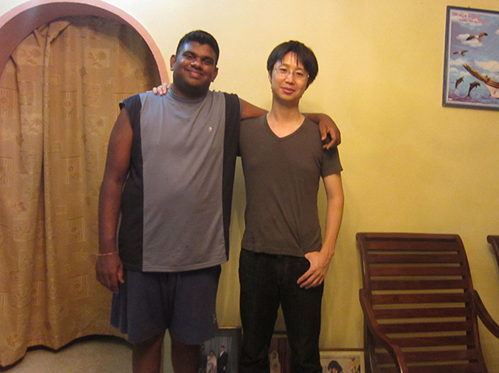
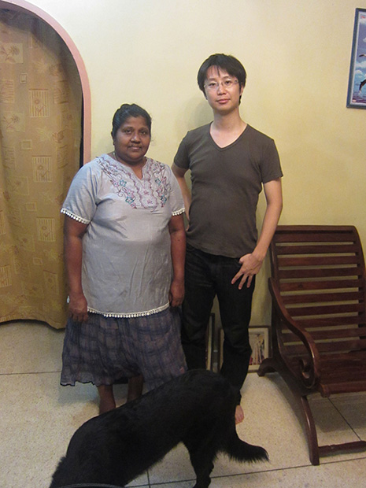
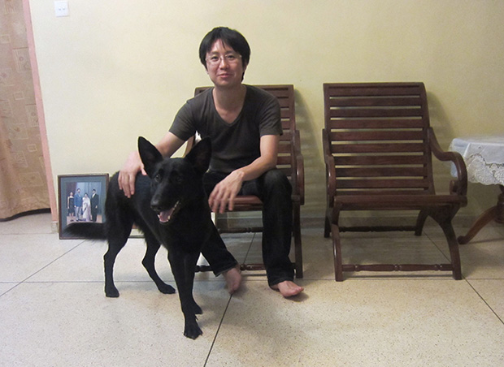

「この留学プログラムを決めたのは下記の理由です。 ①スリランカに行ったことがないので ②価格が安いため ③日程が自由に決められるため ④ホームステイ先に日本人が一人のため
不安なことは、特にありませんでした。
当初はインターネットを介して探したこともあり、失礼ながら詐欺の可能性もあると思っておりましたが、頻繁にメールを頂きましたし、電話での質問にも丁寧に答えていただきました。
英語教師は、とても良い先生でした。 私は以前インドにいたことがあり、インド英語に苦労した経験があるのですが、先生の英語は綺麗でしたし、わからない単語があれば、説明してくれました。
宿題の量としても適切だったと思います。 主に日本とスリランカの違いや文化をお互いに話す内容を経験させてもらい、会話の技術が上がったように思います。 （とはいえ、まだまだですが）
スリランカでのホームステイも、良かったです。 私は、ホームステイの経験がないため、内心怖がっていたのですが、日本人の受け入れ慣れしている感じがしました。
お母さんも歓迎！というよりも、自然体な感じの態度も自分にあっていたように思います。食事は５割おいしい、３割食べられる、２割無理という感じでした。
食べられない時は食べられないというと、別のものを用意してもらえたので、迷惑はかけましたがありがたいと思っております。部屋は、天井のファンがもう少し静かだとありがたいです。
ホストファミリーとの生活も問題ありませんでした。 もう少し一緒にいる期間を増やしたほうが楽しめたかもしれません。 それは次回で。

低開発村視察は楽しかったです。 日本人の方と一緒でしたが、私は初日でしたので少し安心できたような気がします。
スリランカの印象は、まず、インドと違う、と思いました。インドに２ヶ月滞在していたため、近い国ということからスリランカ人も同じような性格なのかと思ったら、人が日本人に似ているように思いました。
インドに比べると人の自己主張は薄い気がします。
気候面は昼は問題なし。夜は暑いという感じです。窓が開けていられる間は涼しい風が入ってきて気持ちがいいのですが、夜は少し寝苦しかったで す。
とはいえ、日本の夏に比べれば乾燥しているためずっと住みやすい気候だと思います。自然はとても綺麗でした。

また、スリランカへ行ってみたいです。 今回は勉強がメインでしたのであまり外出はしなかったのですが、スリランカへは再度行きたいと思います。 （スリランカのお母さんとも約束しましたし）。
英語の勉強で行く時は、この留学プログラムを利用すると思います。
殺菌性の目薬を持っていくべきだったと思います。ごみが入ったらしく、２日間ほど痛かったので。 したかったことは綺麗な海が見たかったです。それは次回。
これまでの海外旅行と比べてもとても良かったです。
ホテルの場合、現地の人と話す機会がほぼない上に、相手が何を目的にしているか疑ってしまうところがありますが、こういう形ならば相手の国を良く知れるし、しかも安全な気がします。
Beインターナショナル並びに現地受入団体の対応は問題ありませんでした。 現地受入団体の方（Ms.Manel）も優しい方でした。
お手続きありがとうございました。いい経験をさせて頂きました。 楽しい旅をありがとうございました。」